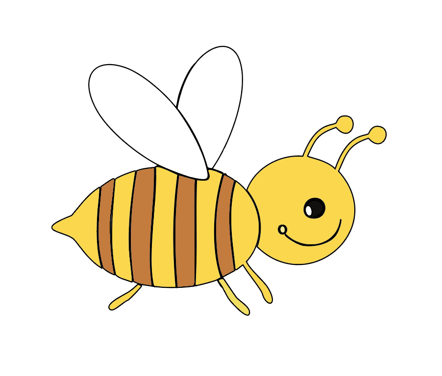
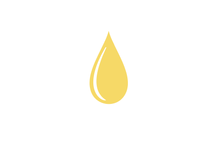

Про головне
Мед — це густа солодка маса, яку бджоли виробляють з нектару квітів. За походженням розрізняють квітковий (нектарний) і падевий мед.
Головною героїнею нашої розповіді буде бджілка оскільки саме вона є основою в видобуванні меду. Ця меленька, крихітка здатна без зупину працювати протягом всього свого життя, заради одного - збирання меду.
Мед бджілка видобуває з медоносних квіток, ці квіти відрізняються ти що виділяють крапельки солодкої рідини, яка називається нектар